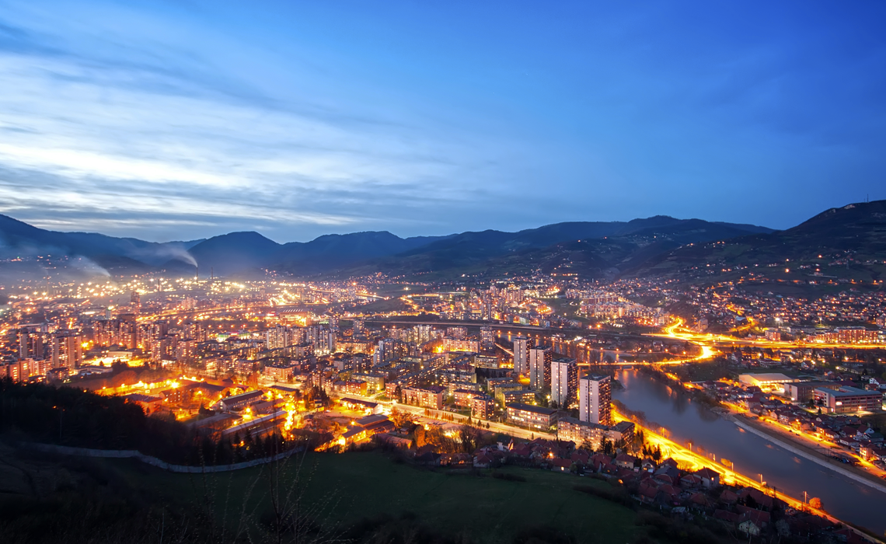

Grad Zenica
Dobrodošli u Zenicu!
Zenica, glavni grad i administrativno sjedište Zeničko-dobojskog kantona, leži u centralnom dijelu Bosne i Hercegovine, baš kao zjenica oka, po čemu je i vjerovatno dobila svoje lijepo i toplo ime.
Prostire se na površini od 557,5 km2 i ima oko 130.000 stanovnika.
Zenica je grad smješten u kotlini rijeke Bosne, na nadmorskoj visini 316 metara i udaljena je od Sarajeva 70 kilometara, sjeverno, dolinom rijeke Bosne. Historija kaže da je još u doba neolita ovaj kraj bio naseljen.
U zeničkoj kotlini živjeli su Iliri, a kasnije su na ovom tlu bili naseljeni Rimljani, koji su na mjestu današnje Zenice formirali municipij Bistua Nuova.
U historiografiji se posebno spominje 8.april 1203.godine, kada se znameniti bosanski vladar Kulin ban, na Saboru sa starješinama bosanskih krstjana, na Bilinom polju, u ime svojih 10.000 kršćana odrekao bogumilstva i tim državničkim potezom izbjegao krstaški pohod protiv Bosne.
U posljednjih 100 godina simbol ovog pitomog grada postala je crna metalurgija i Željezara. U njenoj prelijepoj kotlini izgradio se čelični grad, poput oličenja novog industrijskog svijeta. Ipak, u dušama Zeničana se zadržao vijekovima prenošeni osjećaj za ljepotu i tradiciju, koji zajedno s poslovičnim humorom i prirodnom vedrinom čini ove ljude zanimljivim sagovornicima i gostoljubivim domaćinima.

Najpopularnije izletište Zeničana i mnogih posjetilaca Zenice je izletište Bistričak, sa uređenim prostorom za odmor i rekreaciju, koje je oko 25 km udaljeno od Zenice magistralnim putem u pravcu Doboja do naselja Nemila (20 km) i lokalnim putem uz Bistrički potok (5 km).
U neposrednoj blizini grada, na 1024 metra nadmorske visine, nalazi se rekreativno - turistički centar Smetovi sa uređenim izletištem, skijaškim stazama i restoranom.
Danas, Zenica je moderan grad koji je uspio sačuvati mnoge kulturno - historijske spomenike. U samom centru grada nalazi se kultivirana oaza zelenila i omiljeno okupljalište Zeničana Kamberovića polje, na kojem se nalaze atletski stadion, teniski tereni, tereni za odbojku i nogomet, a u neposrednoj blizini je i moderni šoping centar.